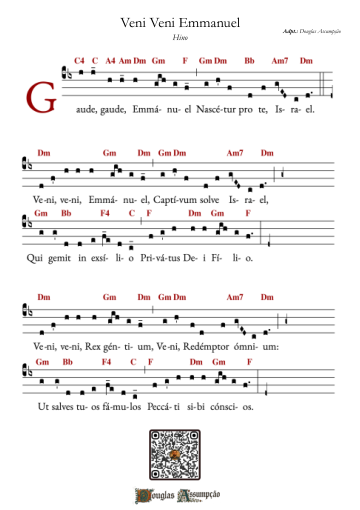

Música sacra · Advento
Veni Veni Emmanuel
Hino do Advento

Advento
YouTubeVeni Veni Emmanuel
Ouça o canto e acompanhe a partitura.

Para o seu ministério de música
A partitura
Partitura gratuita; contribuição opcional.
Abrir PDF em nova aba- Repertório
- Advento
- Versão
- Hino do Advento
Partitura completa
Veni Veni Emmanuel
Use os controles do PDF para ampliar e imprimir. No celular, abra em nova aba para uma leitura mais confortável.
"Veni Veni Emmanuel" — "Vinde, Vinde Emanuel" — é um dos hinos mais antigos e revelaadores da tradição cristã. Esta composição medieval canta a vinda do Messias, unindo as vozes da espera, da esperança e da contemplação do Redentor que virá.
Ler a meditação sobre a antífonaPara rezar e cantar
Meditação sobre o canto
"Veni Veni Emmanuel" é muito mais que um hino: é uma oração que atravessou séculos, trazendo consigo a voz de milhões de cristãos que, como nós, esperaram e esperam a vinda gloriosa do Senhor.
I. A História e a Tradição
Este hino tem origem na tradição medieval e é mencionado já no século XVII. Sua origem remonta a textos litúrgicos antigos, possivelmente de origem gregoriana ou do missal de Milão. O texto, em latim, foi traduzido para várias línguas ao longo dos séculos.
"Veni, veni, Emmanuel, / Captivum solve Israel" — "Vinde, vinde Emmanuel, / Libertem o cativeiro de Israel"
"Este é um dos sete grandes antífonas do Advento, cada uma invocando um aspecto diferente do Messias: Sapientia (Sabedoria), Adonai (Senhor), Radix Jesse (Raiz de Jessé), Clavis David (Chave de Davi), Oriens (Oriente/Luz), Rex Gentium (Rei das Nações), e Emmanuel (Deus conosco)."
II. O Significado Litúrgico
"Veni Veni Emmanuel" encapsula toda a esperança do Advento. Cada verso invoca Cristo sob um de seus muitos títulos, celebrando diferentes aspectos de sua natureza e missão redentora.
O hino nos ensejna que a espera do cristão não é passiva, mas ativa — uma invocação apaixonada pela vinda do Salvador, um clamor do coração que reconhece sua necessidade de redenção.
III. Uma Oração em Forma de Melodia
A beleza de "Veni Veni Emmanuel" reside na forma como sua melodia amplifica o significado de suas palavras. A música gregoriana, com suas subidas e descidas, seus movimentos em torno de notas centrais, expressa a própria dinâmica da espera — o alcançar para cima, a esperança que sobe, a contemplação profunda.
Que esta melodia antiga repouse em nossos corações durante o Advento, transformando nossa espera em comunhão com séculos de fé, com toda a Igreja, visível e invisível, que clama: "Veni, veni, Emmanuel!"
Uma oração em forma de melodia
"Veni Veni Emmanuel" é uma invocação que une passado, presente e futuro. Através desta melodia ancestral, nos juntamos a séculos de cristãos que clamaram pela vinda do Senhor. Que este canto sagrado transforme nossos corações durante o Advento.
Apoie nossa missão
Escaneie para fazer um PIX

Ou copie a chave PIX: